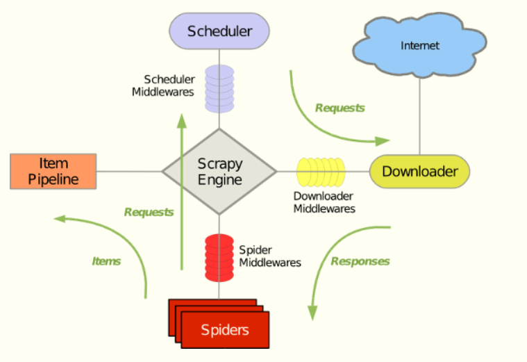

安装Scrapy框架：
- 安装命令'pip install scrapy'
- 在windows下，还需要安装'pypiwin32'
- 在Linux下，还需要安装第三方库
sudo apt-get install python-dev python-pip libxml2-dev libxslt1-dev zlib1g-dev libffi-dev libssl-dev
Scrapy基本概念
Scrapy主要应用于大量的静态网页的爬取


Scrapy Engine(引擎)：负责Spider、ItemPipeline、Downloader、Sheduler中间的通讯，信号、数据传递等
Scheduler（调度器）：它负责接收引擎发送过来的Request请求，并按照一定的方式进行整理排列，入队，当引擎需要时，交还给引擎。
Downloader（下载器）：负责下载Scrapy Engine（引擎）发送的Request请求，并将其获取到的Response交还给Scrapy Engine（引擎），由引擎交给Spider来处理（Scrapy下载器是建立在twisted这个高效的异步模型上的)
Spider（爬虫）：它负责处理所有Response，从中分析提取数据，获取Item字段需要的数据，并将需要跟进的URL提交给引擎，再次进入
Scheduler（调度器）
Item Pipeline（管道）：它负责处理Spider中获取到的Item，并进行后期处理（详细分析、过滤、存储等）的地方
Downloader Middlewares（下载中间件）：可以自定义扩展下载功能的组件，主要是处理Scrapy引擎与下载器之间的请求及响应。例如：设置代理ip，请求头。必要
Spider Middlewares（爬虫中间件）：自定义扩展和操作引擎和Spider中间通信的功能组件，主要是Spider的响应输入和请求输出。一般不需要
整个流程：

构建Scrapy爬虫步骤：

构建项目：
scrapy startproject 项目名
创建普通爬虫文件
scrapy genspider 爬虫名 "域名"，爬虫名不能和域名一样
项目目录
scrapy.cfg 配置文件 无需修改
__init__.py 初始化文件，在这里导入需要的包
items.py 定义需要爬取的字段
middlewares.py 中间件
pipelines.py 处理item数据
settings.py 设置文件
spiders/ 爬虫目录
spiders/__init__.py 爬虫默认输出路径，不能删除

Item
# -*- coding: utf-8 -*-
# 需要储存的数据
# Define here the models for your scraped items
#
# See documentation in:
# https://doc.scrapy.org/en/latest/topics/items.html
import scrapy
class Scrapydemo1Item(scrapy.Item):
# define the fields for your item here like:
name = scrapy.Field()
title = scrapy.Field()
info = scrapy.Field()
pass
Pipeline

# -*- coding: utf-8 -*-
# 在这里处理每个item
# Define your item pipelines here
#
# Don't forget to add your pipeline to the ITEM_PIPELINES setting
# See: https://doc.scrapy.org/en/latest/topics/item-pipeline.html
#第一种方式，这种方式直接存储结果，内存占用资源较少，不过写入的文件为一条条json字典，读取时每读取一行作为一个Json对象
import json
class Scrapydemo1Pipeline(object):
# 可选,只在第一个item过来时执行
def __init__(self):
# 声明一个管道文件
self.f = open("demo_pipeline.json", "wb")
def open_spider(self,spider):
print('爬虫开始...')
# 引擎传入spider返回的item
def process_item(self, item, spider):
# json.dumps 序列化时对中文默认使用的ascii编码，需要取消
content = json.dumps(dict(item),ensure_ascii=False)+',\n'
self.f.write(content)
return item
# 可选，爬虫结束时执行
def close_spider(self,spider):
self.f.close()
print('爬虫结束...')
#第二种方式，保存为完整的Json格式，不过这种方法先在内存中开辟控件保存，然后一次写入，占用大量内存资源
# from scrapy.exporters import JsonItemExporter
#
# class Scrapydemo1Pipeline(object):
# # 可选,只在第一个item过来时执行
# def __init__(self):
# # 声明一个管道文件，wb表示以二进制方式打开,exproter是以二进制存入
# self.f = open("demo_pipeline.json", "wb")
# self.exporter = JsonItemExporter(self.f, ensure_ascii=False, encoding='utf-8')
# self.exporter.start_exporting()
#
# def open_spider(self, spider):
# print('爬虫开始...')
#
# # 引擎传入spider返回的item
# def process_item(self, item, spider):
# self.exporter.export_item(item)
# return item
#
# # 可选，爬虫结束时执行
# def close_spider(self, spider):
# self.exporter.finish_exporting()
# self.f.close()
# print('爬虫结束...')
第三种方式，坏处是每一行是一个json格式
from scrapy.exporters import JsonLinesItemExporter
class BaidunewsPipeline(object):
def __init__(self):
self.f = open('military.json','ab+')
self.exporter = JsonLinesItemExporter(self.f,ensure_ascii = False,encoding='utf-8')
self.exporter.start_exporting()
def open_spider(self,spider):
print('爬虫开始')
def process_item(self, item, spider):
self.exporter.export_item(item)
return item
def close_spider(self,spider):
self.exporter.finish_exporting()
self.f.close()
print('爬虫结束')
Spider中处理多次url请求
# -*- coding: utf-8 -*-
import scrapy
# 导入item对象
from ScrapyDemo1.items import Scrapydemo1Item
# 基于scrapy.Spider类
class DemoSpider(scrapy.Spider):
#必要，重写Spider类中的name
name = 'demo'
# 等价于
# def __init__(self):
# self.name = 'demo'
# 允许爬虫爬取的域的范围，不必要
allowed_domains = ['www.itcast.cn']
# 爬虫开始时从列表中的url开始，将url放入调度器
# 这里的urls只要是一个迭代对象就可以，列表、元组
# 使用元组的时候记得加上(,)
# 重写自Spider类的start_url
start_urls = ['http://www.itcast.cn/channel/teacher.shtml']
# 如果有多个请求，对于每一个请求都调用一个parse方法
def parse(self, response):
node_list = response.xpath("//div[@class='li_txt']")
# items =[]
for node in node_list:
# 创建item字段对象，用来存储对象
item = Scrapydemo1Item()
# xpath()返回的是一个xpath对象
# 使用extract()将xpath对象转换为Unicode字符串
# 返回的是一个列表
name = node.xpath("./h3/text()").extract()
title = node.xpath("./h4/text()").extract()
info = node.xpath("./p/text()").extract()
item['name'] = name[0]
item['title'] = title[0]
item['info'] = info[0]
# yield表示一个生成器
# 调用parse时会继续该循环
# 将获取的数据交给pipeline
# 好处避免使用[]来存储临时数据，造成内存占用过大
yield item
# items.append(item)
# 返回给引擎
# return items

在Pycharm中，需要单独写一个启动scrapy爬虫的文件，然后执行该文件
from scrapy import cmdline
cmdline.execute('scrpay crawl demo -s LOG_FILE=all.log'.split())
运行结果不直接在窗口输出，以文件形式保存

创建CrawlSpider
CrawlSpider类定义了一些规则(rule)来提供跟进link的方便的机制，从爬取的网页中获取link并继续爬取
scrapy genspider -t crawl [爬虫名称] [域名]


follow可以理解为如果URL的页面中出现符合规则的URL，要递归爬取
# -*- coding: utf-8 -*-
import scrapy
from scrapy.linkextractors import LinkExtractor
from scrapy.spiders import CrawlSpider, Rule
from ScrayDemo2.items import Scraydemo2Item
class WxappSpiderSpider(CrawlSpider):
name = 'wxapp_spider'
allowed_domains = ['wxapp-union.com']
start_urls = ['http://www.wxapp-union.com/portal.php?mod=list&catid=1&page=1']
rules = (
# 链接提取器是以正则表达式规则完成
# 第一个链接提取器不需要callback，因为这是专门用来提取链接的
Rule(LinkExtractor(allow=r'.+mod=list&catid=1&page=\d'), follow=True),
# 第二个链接提取器才是用来提取内容的
Rule(LinkExtractor(allow=r'.+article-.+\.html'), callback="parse_detail", follow=False)
)
# 与BasicSpider不同,这里要自定义parse方法,并且名称不能为parse()
# 因为parse()方法以直接重写Spider里面的方法，会冲突
def parse_detail(self, response):
item = {}
title = response.xpath("//h1[@class='ph']/text()").get()
author_p = response.xpath("//p[@class='authors']")
author = author_p.xpath(".//a/text()").get()
pub_time = author_p.xpath(".//span/text()").get()
# 返回一个列表
article_content = response.xpath("//td[@id='article_content']//text()").getall()
# print(article_content)
# ().join(list)：将序列list中的元素以str连接成为一个新的字符串
# str.strip()：移除字符串头尾指定的字符(默认为空格或换行)
content = "".join(article_content).strip()
item = Scraydemo2Item(title=title, author=author, pub_time=pub_time, content=content)
# return item
Request

url:请求对象的url
callback:在下载器下载完后的回调函数
method:请求的方法，默认为GET方法，可以设置其他方法，如果使用POST方法，建议使用 FormRequest
headers:请求头，对于一些固定的请求头，在settings指定即可。对于那些非固定的，可以在发送请求时指定
meta:在请求和相应之间传递数据
encoding:默认utf-8,
dont_filter:表示不由调度器过滤，在执行多次重复的请求的时候使用，如一些网站有二维码，先得对爬取的网页进行识别二维码处理，然后重新登录该网站，此时dont_filter就得设置为False
errback:发生错误时执行的函数
Response
meta:从其他请求传过来的meta属性，可以用来保持多个请求之间的数据连接
encoding:返回当前字符串编码和解码的格式
text:将返回的数据作为unicode字符串返回
body:将返回的数据作为bytes字符串返回
xpath:xpath选择器
css:css选择器
发送POST请求
想要发送POST请求，需要使用Request的子类FormRequest。如果想要在爬虫一开始就发送POST请求，需要在爬虫中重写start_requests方法，并且不再调用start_urls里的url
url = "http://www.renren.com/PLogin.do"
#data中所有值都是字符串，不能使数字和boolean值
data = {"email":"...qq.com","password":"..."}
# 以post方式发送表单请求
request = scrapy.FormRequest(url,formdata=data,callback=self.parse())
yield request
爬虫中间件和下载中间件
process_request(self,request,spider)：处于引擎到下载器之间
参数
request：发送请求的request对象
spider：发送请求的spider对象
返回值：
返回None：Scrapy将继续处理该request，执行中间件中的响应方法，直到合适的下载器处理函数被调用
返回Response对象：Scrapy将不会调用任何其他process_request方法，将直接返回这个对象，以激活的中间件的process_reponse()方法会在每个response返回时调用
返回Request对象：不再使用之前的request对象去下载数据，而是根据现在返回的request对象返回数据。
异常：调用process_exception方法
process_response(self,request,response,spider)：处于下载器和引擎之间
参数：
request:request对象
reponse:被处理的response对象
spider：
返回值：
Response对象：将这个reponse对象传给其他中间件，最终传给爬虫
Request对象：将这个request对象传给下载器
设置随机请求头
获取你当前的请求信息
请求头查找网站
# -*- coding: utf-8 -*-
import scrapy
import json
class HttpbinSpider(scrapy.Spider):
name = 'httpbin'
allowed_domains = ['httpbin.org']
start_urls = ['http://httpbin.org/user-agent']
def parse(self, response):
user_agent = json.loads(response.text)['user-agent']
print(user_agent)
print('='*20)
yield scrapy.Request(self.start_urls[0],dont_filter=True )
class MiddlewareDemoDownloaderMiddleware(object):
# Not all methods need to be defined. If a method is not defined,
# scrapy acts as if the downloader middleware does not modify the
# passed objects.
USER_AGENTS = [
'Mozilla/5.0 (compatible; MSIE 8.0; Windows NT 6.0; Trident/4.0; Acoo Browser 1.98.744; .NET CLR 3.5.30729)',
'Mozilla/5.0 (compatible; MSIE 8.0; Windows NT 6.0; Trident/4.0; Acoo Browser 1.98.744; .NET CLR 3.5.30729)',
'Mozilla/4.0 (compatible; MSIE 8.0; Windows NT 6.0; Trident/4.0; Acoo Browser; GTB5; Mozilla/4.0 (compatible; MSIE 6.0; Windows NT 5.1; SV1) ; InfoPath.1; .NET CLR 3.5.30729; .NET CLR 3.0.30618)',
'Mozilla/4.0 (compatible; MSIE 8.0; Windows NT 5.1; Trident/4.0; SV1; Acoo Browser; .NET CLR 2.0.50727; .NET CLR 3.0.4506.2152; .NET CLR 3.5.30729; Avant Browser)',
'Mozilla/4.0 (compatible; MSIE 7.0; Windows NT 6.0; Acoo Browser; SLCC1; .NET CLR 2.0.50727; Media Center PC 5.0; .NET CLR 3.0.04506)',
'Mozilla/4.0 (compatible; MSIE 7.0; Windows NT 6.0; Acoo Browser; GTB5; Mozilla/4.0 (compatible; MSIE 6.0; Windows NT 5.1; SV1) ; Maxthon; InfoPath.1; .NET CLR 3.5.30729; .NET CLR 3.0.30618)',
'Mozilla/4.0 (compatible; Mozilla/5.0 (compatible; MSIE 8.0; Windows NT 6.0; Trident/4.0; Acoo Browser 1.98.744; .NET CLR 3.5.30729); Windows NT 5.1; Trident/4.0)',
'Mozilla/4.0 (compatible; Mozilla/4.0 (compatible; MSIE 8.0; Windows NT 5.1; Trident/4.0; GTB6; Acoo Browser; .NET CLR 1.1.4322; .NET CLR 2.0.50727); Windows NT 5.1; Trident/4.0; Maxthon; .NET CLR 2.0.50727; .NET CLR 1.1.4322; InfoPath.2)',
'Mozilla/4.0 (compatible; MSIE 8.0; Windows NT 6.0; Trident/4.0; Acoo Browser; GTB6; Mozilla/4.0 (compatible; MSIE 6.0; Windows NT 5.1; SV1) ; InfoPath.1; .NET CLR 3.5.30729; .NET CLR 3.0.30618)',
'Mozilla/4.0 (compatible; MSIE 8.0; Windows NT 6.0; Trident/4.0; Acoo Browser; GTB5; Mozilla/4.0 (compatible; MSIE 6.0; Windows NT 5.1; SV1) ; InfoPath.1; .NET CLR 3.5.30729; .NET CLR 3.0.30618)',
'Mozilla/4.0 (compatible; MSIE 8.0; Windows NT 5.1; Trident/4.0; GTB6; Acoo Browser; .NET CLR 1.1.4322; .NET CLR 2.0.50727)',
'Mozilla/4.0 (compatible; MSIE 7.0; Windows NT 6.0; Trident/4.0; Acoo Browser; GTB5; Mozilla/4.0 (compatible; MSIE 6.0; Windows NT 5.1; SV1) ; InfoPath.1; .NET CLR 3.5.30729; .NET CLR 3.0.30618)',
'Mozilla/4.0 (compatible; MSIE 7.0; Windows NT 6.0; Acoo Browser; SLCC1; .NET CLR 2.0.50727; Media Center PC 5.0; .NET CLR 3.0.04506)',
'Mozilla/4.0 (compatible; MSIE 7.0; Windows NT 6.0; Acoo Browser; GTB5; SLCC1; .NET CLR 2.0.50727; Media Center PC 5.0; .NET CLR 3.0.04506)',
'Mozilla/4.0 (compatible; MSIE 7.0; Windows NT 6.0; Acoo Browser; GTB5; Mozilla/4.0 (compatible; MSIE 6.0; Windows NT 5.1; SV1) ; InfoPath.1; .NET CLR 3.5.30729; .NET CLR 3.0.30618)',
'Mozilla/4.0 (compatible; MSIE 7.0; Windows NT 5.1; Acoo Browser; InfoPath.2; .NET CLR 2.0.50727; Alexa Toolbar)',
'Mozilla/4.0 (compatible; MSIE 7.0; Windows NT 5.1; Acoo Browser; .NET CLR 2.0.50727; .NET CLR 1.1.4322)',
'Mozilla/4.0 (compatible; MSIE 7.0; Windows NT 5.1; Acoo Browser; .NET CLR 1.0.3705; .NET CLR 1.1.4322; .NET CLR 2.0.50727; FDM; .NET CLR 3.0.04506.30; .NET CLR 3.0.04506.648; .NET CLR 3.5.21022; InfoPath.2)',
'Mozilla/4.0 (compatible; MSIE 6.0; Windows NT 5.1; SV1; Acoo Browser; .NET CLR 1.1.4322; .NET CLR 2.0.50727)'
]
def process_request(self, request, spider):
user_agent = random.choice(self.USER_AGENTS)
request.headers['User-Agent'] = user_agent
return None
设置代理ip